| |
Model Structure |
| <<< Introduction To Basic Concepts In Parasolid | Chapters | Body Types >>> |
This chapter describes the major entities that comprise Parasolid models, or are used to manage Parasolid sessions. The entities fall into four major groups:
This chapter also discusses the relationships between topological and geometric entities (Section 14.7), including the way Parasolid represents edges and curves in models that use precisions other than the default Parasolid precision (Section 14.8). For more information about the use of precision in Parasolid, see Chapter 16, “Session And Local Precision”.
You can find information about the connections between these entities using the many PK enquiry and output functions that are available. See Chapter 27, “Enquiry And Output Functions”, for details.
For an example of how model structure is represented in Parasolid, see the code example in the
C++\Code
Examples\Inquiries\Model
Structure
folder, located in
example_applications
in your Parasolid installation folder.
|
Note: The general relationships between geometric, topological, and other entities are shown in
Figure 2-4 in Section 2.4, “Entity classes, tokens, tags and identifiers”. You may find it useful to refer to this figure when reading the material in this chapter. |
All Parasolid entities have a class that is represented by a token of type PK_CLASS_t. You can find the immediate superclass of any class using PK_CLASS_ask_superclass. You can find out whether a given class is a subclass of another class using PK_CLASS_is_subclass.
Topological entities comprise all the entities that constitute the structure or skeleton of a model. All topological entities are within the superclass PK_CLASS_topol.
Bodies (PK_CLASS_body) are fundamental to modeling with the PK.
A body can have one of the following configurations:
|
A standard body is the basic “unit” of modelling. Throughout this documentation, “standard bodies” are referred to as “bodies” for simplicity, unless it is to distinguish them from compound or child bodies. |
|
|
A compound body is a container for “child” bodies that are expected to be related in some way such that they are able to share some physical aspects, for example, a sheet and a solid body used to represent the pre- and post-thicken stages in the development of a body. See Section 15.13, “Compound bodies”, for more information about compound bodies. |
|
|
Within a compound body, a child body is used to define one representation of a part. It can share geometric entities with other child bodies in the compound body, but apart from this, it is identical in every other way to a standard body. See Section 15.13, “Compound bodies”, for more information about child bodies. |
You can find the configuration of a given body using PK_BODY_ask_config.
A (standard) body is composed of one or more components, where a component is a set of connected entities. The following types of component are available:
You can return the components of a given body using PK_BODY_ask_components.
These components can then be combined into the following types of body:
|
Zero components. An empty body has an unbounded void region that does not contain any components. |
||
|
One or more acorn components. An acorn body has one infinite void region, containing any number of shells, each of which contains only a single vertex. A minimum body is a special case of an acorn body containing exactly one isolated vertex. You can create a minimum body using PK_POINT_make_minimum_body. |
||
|
One or more wire components. A wire body has one infinite void region containing any number of shells, each of which contains a single set of connected edges. Figure 14-1 (a) illustrates valid and invalid wire bodies. |
||
|
One or more sheet components. A sheet body that contains only open components has one infinite void region containing any number of shells, each of which contains a single set of connected faces. For each closed component, there is an extra bounded void region representing the interior of the closed component. Figure 14-1 (b) illustrates valid and invalid sheet bodies. |
||
|
One or more solid components. Each solid component has a continuous bound volume. A solid body has one infinite void region, one solid region for each continuous solid volume, and one void region for each bounded continuous void volume. |
||
|
Bodies that contain one or both of the following: Note: A general component can be non-manifold. See Section 15.2, “Manifold body types”, for information about manifold and non-manifold bodies. |
You can find the type of a given body using PK_BODY_ask_type.
Section 14.2.13, “Component”, contains more information about components and how to identify them in a body.
Within limitations, you can convert between different types of body using PK_BODY_set_type. This allows you, for example to convert a solid cube into a closed sheet. See Section 15.6, “Changing the body type”, for more details.
A body that contains more than one component is called a disjoint body.
For example, a disjoint sheet body would consist of several sheet components. Each sheet component would be composed of one or more connected faces which may be open or closed.
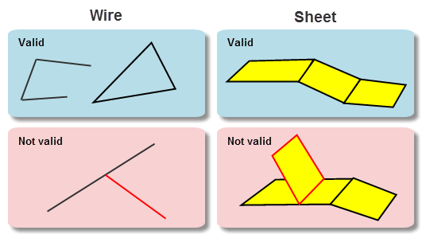Figure 14-1 Valid and invalid wire (a) and sheet (b) bodies
Bodies can contain the following topological entities:
In addition, every face, edge, vertex and frame in a body requires an attached geometric entity - a surface, curve, point or lattice - for a fully defined, valid model.
A region (PK_CLASS_region) is a connected subset of 3-dimensional space whose boundary is a collection of shells. Regions are either solid or void (empty); you can find out whether a region is solid or void using PK_REGION_is_solid.
A body always has an infinite void region (which you can think of as all the space outside of the body itself), and the sum of all regions in a body comprises the whole of 3-D space.
For example, the hollow cube shown in Figure 14-2 can be thought of as a collection of three regions:
Figure 14-2 Hollow cube consisting of three regions
Two regions may share a face, so that one region is on each side of the face. Figure 14-3 illustrates a partitioned general body with three regions, two of which are solid and share a common face (the partition face).
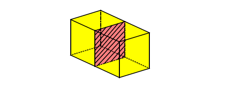Figure 14-3 General body partitioned by an internal face
The shells in a region do not overlap or share faces, edges or vertices. A region may have no shells, in which case it represents all space (and is the only region in its body, which has no faces, edges or vertices).
A region may own a frame that embeds a lattice in the region, which changes the material type of the region. The material contained in a region can consist of:
A shell (PK_CLASS_shell) is a connected collection of oriented faces (each used by the shell on one or both sides of the face) and edges. A shell has:
Each pair consists of a face and a logical that indicates either the front (true) or the back (false) of the face. The front of the face is the side towards which the face normal points. The region to which the shell belongs lies on the indicated side of the face.
The edges represent 1-dimensional cuts in the shell's region (referred to as wire-frame edges).
A shell may also consist of just a single vertex, referred to as an acorn vertex.
A face (PK_CLASS_face) is a bounded subset of a surface, whose boundary is a collection of zero or more loops. It is a 2-dimensional analogy of a region.
A face with zero loops forms a closed entity such as a full spherical face.
A loop (PK_CLASS_loop) is a connected component of a face boundary. It is the 2-dimensional analogy of a shell. A loop can have:
The order of any fins represents the order that their owning edges are connected to each other via common vertices in the loop, taking the sense of each fin into account.
A loop may not contain the same edge more than once in each direction.
The direction of the loop is such that the face is locally on the left of the loop, when seen from above the face and looking in the direction of the loop. For more information about the direction of a loop, see Section 14.7.4, “Loop, fin and edge directions”.
If the loop has any fins, the vertices must be connected to the edges which own the fins. If the loop has no fins, there must be only one vertex.
Consequently, a loop must be one of the following:
Parasolid distinguishes between several different types of loop. A loop’s type depends on the underlying surface of the face to which the loop belongs.
Vertex loops and wire loops are generic return values that cover simple degenerate special cases; on solid and sheet bodies these loop types correspond to edges and vertices scribed inside a face, as shown in Figure 14-4.
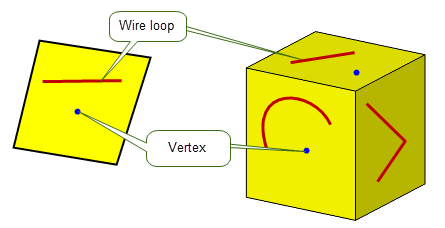Figure 14-4 Vertex and wire loops
Each face on a non-periodic surface contains one outer loop (around the periphery of the face) and any number of inner loops (holes in the face). This is illustrated in Figure 14-5.
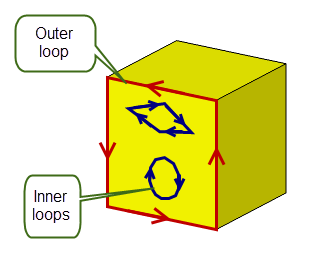Figure 14-5 Outer and inner loops on a face
Note: Some applications classify an outer loop in the context of the parameter space of the underlying surface (a “parametric outer loop”), rather than 3D model space. For most non-periodic faces, this is the same as Parasolid’s definition of an outer loop, but in some circumstances (cones, for example), Parasolid may identify an outer loop, where other applications would fail to find one.
|
Closed loops that wind once around the periodic parameter space of cylindrical topology (i.e. bodies that are periodic in one parameter only) are known as winding loops.
To define the periphery of a face in a surface like this, you need either:
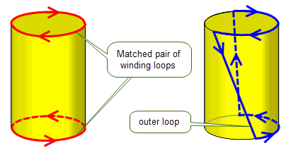Figure 14-6 Defining cylindrical face peripheries using winding and outer loops
Like non-periodic faces, cylindrical topology can contain any number of inner loops.
Surfaces such as cones, that are periodic in one parameter and degenerate at one end, contain just one outer loop, and any number of inner loops. Inner loops are also winding if they surround the degeneracy, as shown in Figure 14-7. Such loops are known as inner singularity loops.
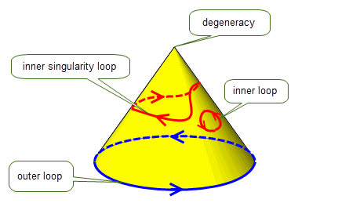Figure 14-7 Loops in conic topology
Surfaces that are periodic in both parameters, such as doughnut tori, can have winding loops that wind one or more times in either parameter. Any other loops form either the periphery of open regions (outer loops), or holes in the whole closed surface (inner loops).
Closed loops in spherical topology (closed in one parameter and degenerate in the other) split the whole surface in two. There are three types of closed loop on a spherical surface:
These types of loop apply to spherical topology in which the degeneracy is either smooth or sharp in 3-D.
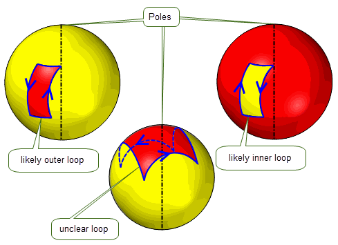Figure 14-9 Loops on spherical topology
You can find the type of a given loop using PK_LOOP_ask_type.
A fin (PK_CLASS_fin) represents the oriented use of an edge by a loop. A fin has:
An edge (PK_CLASS_edge) is a bounded piece of a single curve. Its boundary is a collection of zero, one or two vertices. It is a 1-dimensional analogy of a region.
The ordering of the fins represents the spatial ordering of their owning faces about the edge, when applying the right-hand cork screw rule, i.e. looking in the direction of the edge the fin ordering is clockwise. For more information about the direction of a loop, see Section 14.7.4, “Loop, fin and edge directions”.
An edge may have zero or any number of fins:
You can use PK_EDGE_ask_type to return information about any given edge.
If one of the vertices is null, then the other must be as well. When this is the case, the edge represents a whole periodic curve.
A vertex (PK_CLASS_vertex) represents a point in space. It is the zero-dimensional analogy of a region. A vertex has a single point, which may be null.
A frame (PK_CLASS_frame) connects an owning region to a lattice, with the frame acting as a boundary that divides its owning region. It provides a one-to-one link between the region and lattice, and can add context to the relationship through the attachment of attributes.
Frames support the following relationships:
These relationships are illustrated in Figure 14-10.
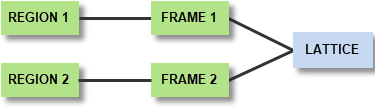Figure 14-10 The relationships supported by frames
Frames cannot be created or deleted directly. A frame is created when a lattice is embedded in a region, and deleted when its associated lattice is removed from the region.
An assembly (PK_CLASS_assembly) is a collection of instances, where each instance references
An assembly cannot directly or indirectly instance itself. Thus, the tree of assemblies and parts must not be cyclic, as illustrated in Figure 14-11.
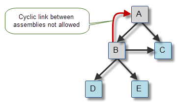Figure 14-11 Cyclic and acyclic trees of assemblies and parts
An assembly can also have construction geometry, consisting of surfaces, curves and points that are attached directly to the assembly.
Use PK_ASSEMBLY_create_empty to create a new, empty assembly.
Use PK_ASSEMBLY_ask_parts_transfs to return all the parts and transforms in a given assembly.
The transform must be a rigid motion or a reflection: no scale, shear or perspective transformation can be used.
An instance (PK_CLASS_instance) references its owning assembly, the part it instances, and a transform. If the transform is null, it is treated as the identity transform.
Use PK_INSTANCE_create to create a new instance. This function assumes that the part and transform referenced by the instance have already been created.
A part (PK_CLASS_part) represents either a body or an assembly.
To add or remove construction geometry from a part, use PK_PART_add_geoms or PK_PART_remove_geoms. See Section 14.3, “Geometric entities”, for information about construction geometry.
To archive a part to external storage, use one of the PK_PART_transmit functions. To load a part into memory from external storage, use one of the PK_PART_receive functions. See Chapter 101, “Archives”, for more information.
Each entity in a part receives both a tag and an identifier (except for fins, which do not receive an identifier). However, whereas tags are unique across the whole Parasolid session, identifiers are only unique within the context of the given body or assembly.
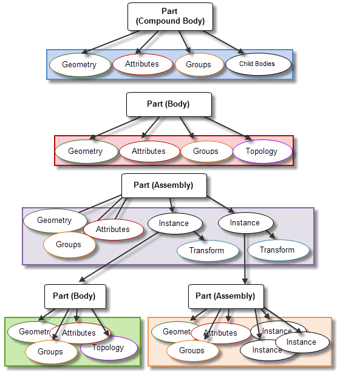Figure 14-12 Uniqueness of identifiers within parts
Figure 14-12 illustrates the context in which identifiers are unique within parts; in the diagram, entities within each coloured box are guaranteed to have unique identifiers, but entities across coloured boxes are not. Thus, it is possible for an entity in a body to have the same identifier as an entity in an assembly that references that body.
See Section 2.4.4, “Identifiers” and Section 2.4.2, “Tags” for more information.
Bodies are comprised of one or more components, where each component is a maximally connected set of topological entities. A single component is the set of topological entities formed by starting at any topology in the body, and following any of the following connections:
Because a component is a set of entities, rather than a single entity, it is represented in Parasolid, by convention, by the shell that envelopes the outside of the component. You can use PK_BODY_ask_components to return this shell for each component in a body. You can extract the component in which a given topology lies into a new body using PK_TOPOL_remove_body_component. The tags of topologies (i.e. shells, faces, loops, fins, edges, and vertices) in the component being extracted are preserved by the operation. Region tags are also preserved, except that the infinite void region of the new body is new.
There are four classes of geometric entity: PK_CLASS_lattice, PK_CLASS_surf, PK_CLASS_curve, and PK_CLASS_point. All four have the immediate superclass PK_CLASS_geom.
The primary function of geometric entities is to specify the geometric shape of a body. These geometries are referred to as principal geometry. In a completely defined part, geometric entities are attached to topological entities according to the relationships shown in Figure 14-14.
Nominal geometry is considered a special case of principal geometry. This is a mechanism whereby edges that have local precision, can reference a notional accurate curve. In this situation, nominal curves are not used to define the shape of the attached edge, which is defined by the geometry on the fin of the edge instead. See Chapter 19, “Nominal Geometry”, for more information.
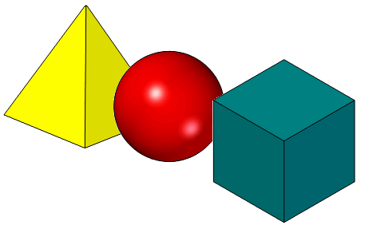Figure 14-13 Examples of 3D geometric shapes
Geometric entities may also be attached directly to a body to form construction geometry, as a means of keeping relevant entities with the body. For example, you might want to attach a point to a body that represents its centre of gravity. This is shown in Figure 14-14.
Geometric entities can also be manipulated independently of any body. Orphan geometry is geometry not attached to any topological entity, even a body. It is attached to the current partition instead. This is useful if you want to create geometry prior to using it in a body, for example, to create a surface before attaching it into a body.
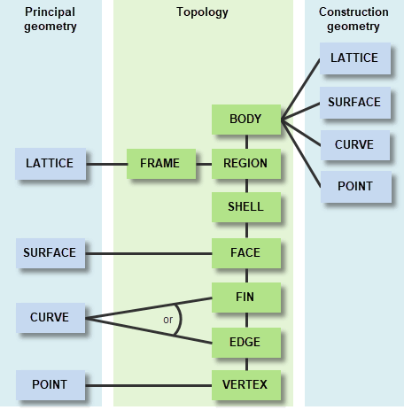Figure 14-14 Geometric and topological entities
Lattices are a geometry type that can be created, enquired of, rendered, embedded in a region and attached to a part as construction geometry. Solid convergent bodies can be created from them. See Section 20, “Lattice Geometry”, for more information on lattices.
Surfaces are principally attached to faces, but may also be attached to bodies as construction geometry. Normally every face has an attached surface, but it may be detached temporarily as the model is being built or modified. The following types of surface are available in Parasolid:
All of the classes listed above have the immediate superclass PK_CLASS_surf.
Curves are principally attached to edges or fins of the model, and may also be attached to bodies as construction geometry. Curves occur in the following classes:
All of the classes above have the immediate superclass PK_CLASS_curve.
|
Parasolid partially supports trimmed curves (PK_CLASS_trcurve) only for legacy purposes, so that you can enquire information about trimmed curves in old models. These is no support for creating or manipulating trimmed curves. See PK_TRCURVE_t for more information. |
Points (PK_CLASS_point) are principally attached to vertices, and may also be attached to bodies as construction points. All points are Cartesian Points.
In order to reduce the overall size of a model, classic geometry can be shared where appropriate. Geometry sharing only occurs in a single body and works for the following cases:
|
Note: Facet geometry cannot be shared in this way. |
A dependency exists between two geometric entities when the definition of one of the entities references the other. For example, a dependency exists between an offset surface (PK_OFFSET_t) and the base surface from which it is offset; the standard form definition of the offset surface (PK_OFFSET_sf_t) references the base surface.
You can use the functions PK_GEOM_ask_dependents and PK_GEOM_ask_geom_owners to find out dependency information for any given geometric entity.
You can use PK_GEOM_copy to copy a collection of geometric entities while preserving the geometric dependencies among them. This function receives any mixture of principal, construction, or orphan geometry, and creates copies of those geometries, together with geometries that are referenced by their definitions. In addition, it ensures that any duplicates in the input geometries are copied once and referenced, rather than duplicated, in the copies.
PK_GEOM_copy returns the copied entities in the order they were supplied. If the input geometries contained duplicate entities, these are only copied once, but appear several times in the return structure. In addition, the function returns tracking information that associates the original geometries with their copies.
By default, orphan geometry is copied as orphan geometry in the original geometry’s partition, and construction and principal geometry are copied as construction geometry in the original geometry’s part.
PK_GEOM_copy receives an array of geometric entities, together with an options structure that supports the following options:
destination |
The destination for the copied geometries. This can be one of the following:
|
copy_dependents |
Level of control over copying dependent geometry. This can be one of the following:
|
copy_attributes |
Whether or not to copy attributes attached to the geometric entities. This can be one of the following: |
Undesirable geometric properties can in some circumstances lead to problems and wherever practical should be avoided. The following is a non-exhaustive list of such properties:
The following types of session object are used for rollback management.
A partition (PK_CLASS_partition) is a collection of parts and other data whose state can be rolled back and forward within a session independently of other partitions, to assist your application with feature modeling. All topological and geometric entities in a given session are contained in some partition. A session may have only one partition, in which case all entities are in that partition. See Chapter 97, “Partitions” for more information on partitions.
The following objects relate to partitions, and are for use with rollback.
Pmarks (PK_CLASS_pmark) are rollback marks set in a partition to record the state of the partition at that point. A partition can be rolled forward or backward to any pmark that has been set. Setting a pmark creates a delta. See Section 98.2.2, “Partition marks” for more information.
Deltas record the changes required to move from one pmark to an adjacent one. They are output through the delta frustrum. See Section 98.3, “Deltas” for more information.
Marks (PK_CLASS_mark) record the state of the entire modeling session at a given point. A mark is set by creating a pmark in each partition.
|
Note: Partitions can also be saved and retrieved as a complete item. The file contains the partition's pmarks (and optionally its deltas) as well as the bodies being modeled in that partition. |
There are other Parasolid entities available that manipulate and attach additional data to a model, or define extra structure.
Attributes (PK_CLASS_attrib) are data structures that can be attached to any single topological or geometric entity, or any group. They contain fields of particular types that are specified in an attribute definition (PK_CLASS_attdef).
The data stored in attributes, and the existence of the attributes, is either automatically updated when their owning entities are involved in modeling operations, or can be controlled by the user via callbacks. See Chapter 96, “Attributes” for more information.
Groups (PK_CLASS_group) are collections of entities within a body. They can refer to regions, faces, edges, vertices, frames, lattices, surfaces, curves, points and groups, or a mixture of all of these classes. Groups are useful in feature modeling: for example, you can create a feature such as a boss and create a group that contains all the entities that constitute it. You can then identify the feature by attaching a single attribute to the group, rather than having to attach attributes to each of the individual entities.
Groups containing entities modified in modeling operations are automatically updated by the kernel. See Chapter 99, “Groups” for more information.
Transforms (PK_CLASS_transf) express geometric operations: translations, reflections etc. They may be used directly in the specification of certain modeling and rendering operations (such as creating assemblies). They are sometimes known as transformations.
Appitems (PK_CLASS_appitem) act as identifiers for some piece of data within your application. They contain tags that, rather than identifying an entity in a Parasolid session, identify something in your application.
This section discusses in more detail the relationships between topological entities and the geometric entities that can be attached to them.
For manifold bodies, the face normals (normals of the faces) in a solid body must point away from the solid region.
For faces of an outer shell, the normals point outwards. For an inner shell (i.e. a void inside a solid) the face normals point inwards; that is, away from the solid.
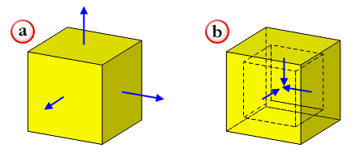Figure 14-15 Face normals of (a) a body, and (b) an inner shell
It is possible to have a solid that is inside out, so that the face normals point into the solid. Such a body is called a negative body. The only operation that can be performed on a negative body is to negate it.
Face normals must also point away from the body for manifold sheet bodies. The face normals in a sheet body must be consistent, as shown below.
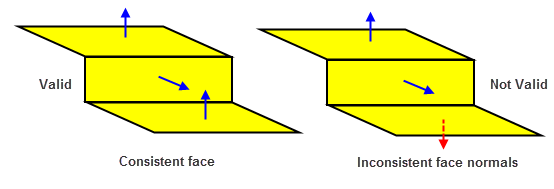Figure 14-16 Face normals of sheet bodies
To reverse a face normal in a general body, use PK_FACE_reverse.
The orientation of a surface depends on its geometry. Every surface has a natural orientation. For example:
In parametric form, the orientation is along dU X dV.
You can negate a surface using PK_BODY_reverse_orientation. This has the effect of reversing the surface normal.
The relationship between a face and its underlying surface is determined by the face orientation flag, which indicates the direction of the face normal with respect to the surface normal. If this flag is PK_LOGICAL_true, then the face normal is parallel to the surface normal, otherwise it is anti-parallel, as shown in Figure 14-17.
PK_FACE_ask_oriented_surf returns the surface underlying a face plus the face orientation flag. When the application requires a face normal at a given point, then it needs to call both this function and PK_SURF_eval_with_normal.
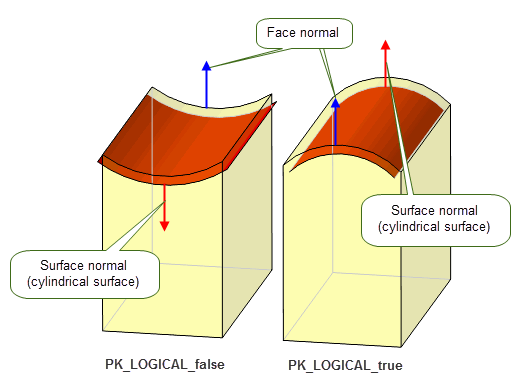Figure 14-17 Face orientation flag
Loops, fins and edges have directions, and there are conventions that define the way they relate to the face normals and to each other. These conventions are as follows:
Figure 14-18 Loop directions of the top face of a cube with a cylindrical pocket
The direction of a face’s loop determines the direction of the edges and fins of that face:
The curve direction is determined by the curve tangent, which is always in the direction of increasing parameter value.
You can negate a curve using PK_CURVE_make_curve_reversed. This has the effect of reversing the curve direction.
The relationship between the direction of an edge or fin and the direction of its underlying curve is determined by the edge/fin orientation flag. If this flag is PK_LOGICAL_true, then the direction of the edge or fin is parallel to the underlying curve tangent, otherwise it is anti-parallel.
PK_EDGE_ask_oriented_curve and PK_FIN_ask_oriented_curve both return the following values:
When your application requires an edge or fin direction at a given point, then it needs to call one of these functions, together with one of the following:
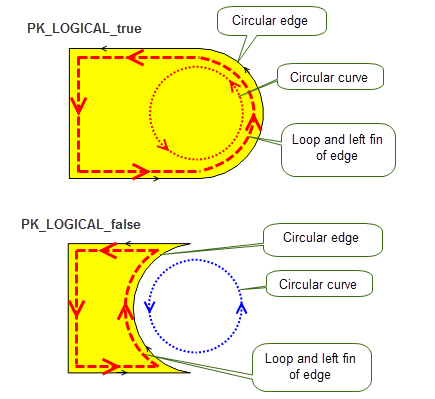Figure 14-19 The relationship between the direction of the curve and its owning edge/fin
An exact edge is an edge that has been created in Parasolid and is represented by an untrimmed 3-space curve, which is attached to the edge itself.
An edge with local precision (for example, an edge which has been created by another modeler and is therefore not necessarily modeled to Parasolid tolerance) is represented by an SP-curve attached to each fin. The only geometry that may be attached to an edge with local precision is nominal geometry (see Section 14.8.3).
When an accurate edge is made tolerant, the 3-space curve on the edge is normally detached and deleted (unless used by another edge). Nominal Geometry is a mechanism whereby this 3-space curve can be retained on the edge or associated with the edge manually.
Parasolid provides support for models whose parts are of different scales by allowing geometry created at a larger scale to be trimmed and scaled so it can interact with entities at smaller scales. This functionality can be useful when working with assemblies consisting of mixed scale parts. This section discusses the support provided by Parasolid as follows:
PK_BODY_enlarge enables you to create a new body by enlarging a copy of the supplied body by a given factor, transforming the geometries and trimming the enlarged geometries where required to satisfy the size box or an optional trim box.
The body supplied is copied and a
factor
is applied which determines by how much the geometries on the copied body are enlarged (the centre of scaling is the origin). For example, if
factor
is set to PK_scale_factor_10x_c, then the geometry is scaled by a factor of 10. These enlarged geometries are then transformed using the transform supplied in the
transf
option.
Note: If a system attribute of type SDL/TYSA_SCALE_FACTOR is attached to the supplied body, the value of
factor
in PK_BODY_enlarge can modify the value of the system attribute as appropriate to ensure the size of the result body in real-world units remains unchanged. For more information on this scale factor attribute, see Section A.3.13, “Scale factor”. |
PK_BODY_enlarge takes the following options:
|
If |
|
|
Whether or not to allow disjoint bodies to be returned in the result. |
|
|
Whether to return regions from the resultant body in the Default: PK_track_regions_no_c |
|
|
Whether to return faces from the resultant body in the Default: PK_track_faces_no_c |
|
|
Whether to return edges from the resultant body in the Default: PK_track_edges_no_c |
|
|
Whether to return vertices from the resultant body in the Default: PK_track_vertices_no_c |
By supplying a
trimming_box
, you can trim the resultant enlarged geometries thereby partially excluding or completely excluding some of the enlarged geometries from the results. Geometries will always be trimmed when required to avoid size box violations.
Figure 14-20 Enlarging and trimming a body to fit a supplied trimming box
You can choose to return tracking information, which contains information on the mapping of original entities to the resultant enlarged entities, via
tracking
in the returns structure. See the
PK Interface Programming Reference Manual for more information.
PK_GEOM_enlarge allows you to enlarge supplied geometries by a specified scaling factor. For each geometry supplied via
geoms
, a
factor
is applied which determines by how much the geometry is enlarged (the centre of scaling is the origin). For example, if
factor
is set to PK_scale_factor_10x_c, then the geometry is scaled by a factor of 10.
Transforms can be applied to the enlarged geometries by supplying a corresponding transform in the
transfs
array.
PK_GEOM_enlarge has the following options:
|
Allows you to specify the destination for enlarged geometries. This can be one of the following:
See the table in PK_GEOM_enlarge_o_t for information on how the precise behaviour varies depending on the entity you are copying. |
|
|
If
transfs
, any trimming will be applied to the transformed geometries. |
|
PK_GEOM_enlarge returns a
results
array which contains an array of the enlarged geometries and information on the result of the enlarge operation. See the
PK Interface Programming Reference Manual for more information on the returns.
| <<< Introduction To Basic Concepts In Parasolid | Chapters | Body Types >>> |